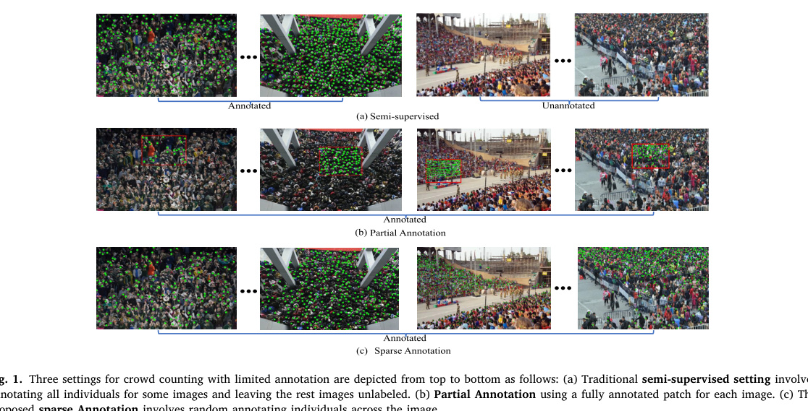
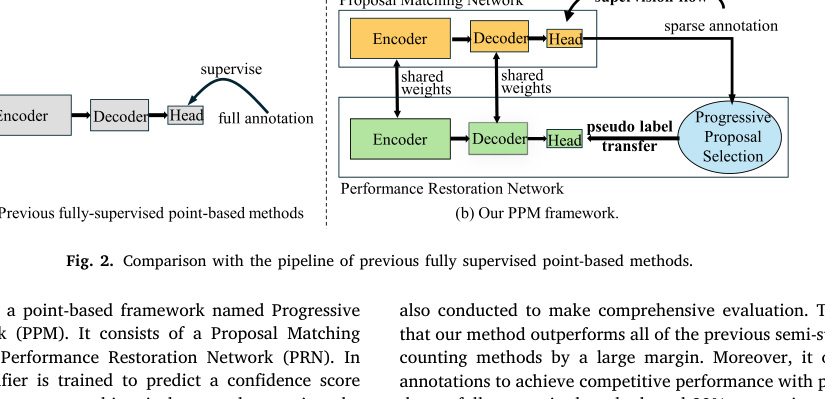
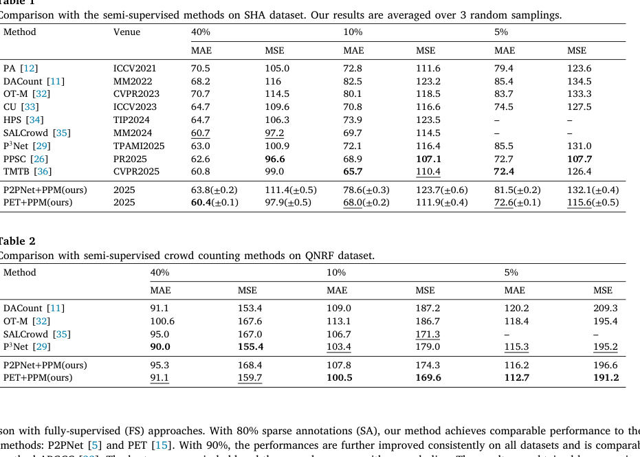
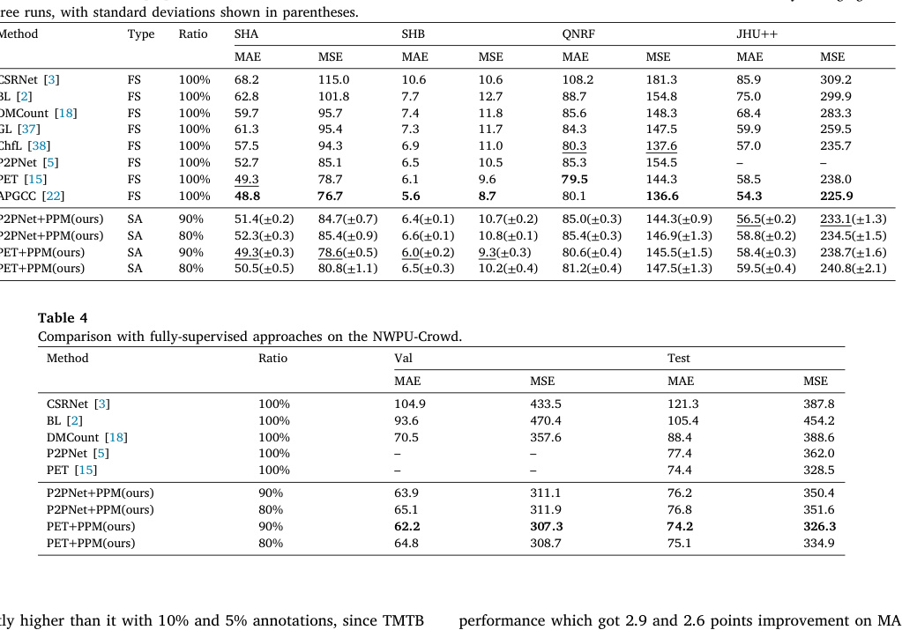
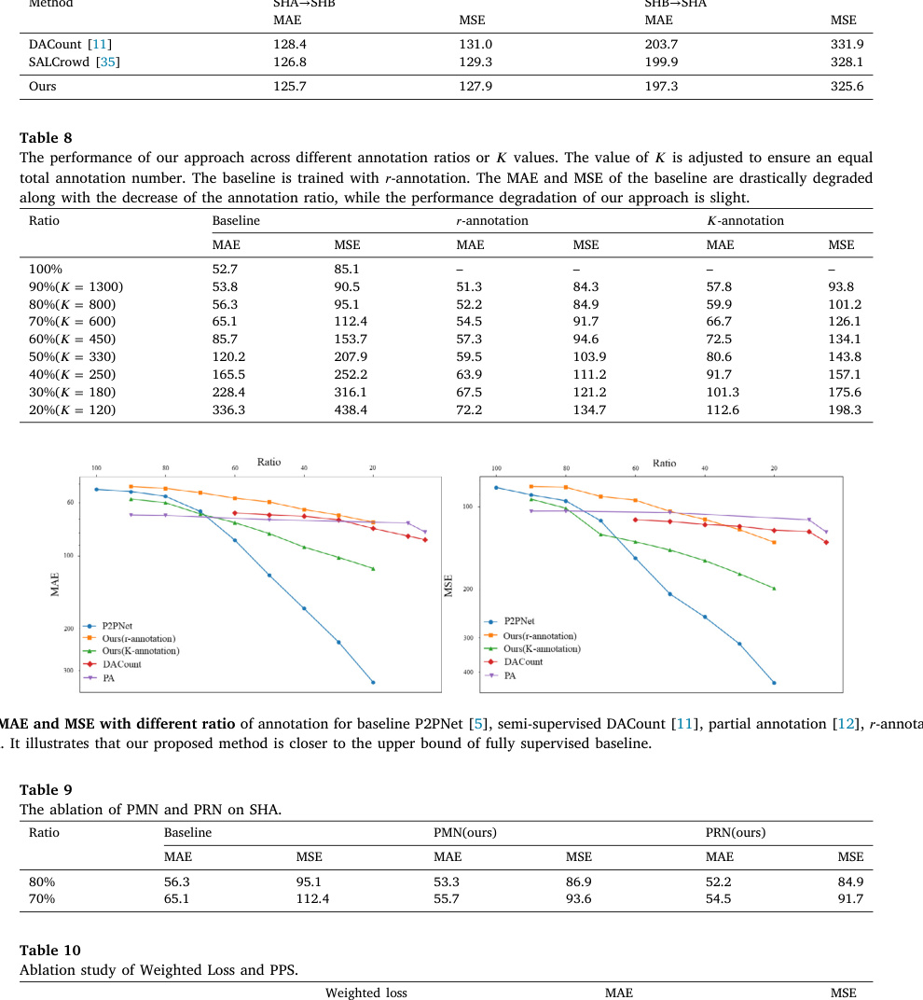
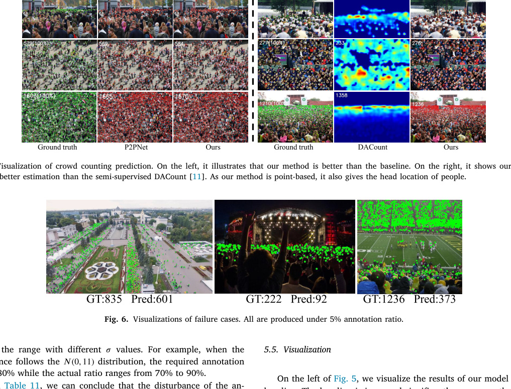

Pattern Recognition 180, 114000, 2026
Publication
Crowd Counting with Sparse Annotation
Shiwei Zhang, Zhengzheng Wang, Qing Liu, Fei Wang, Wei Ke, Tong Zhang
This Pattern Recognition paper introduces sparse annotation for crowd counting and a Progressive Point Matching network that learns reliable point-based counters from sparsely labeled people in each image.
Computer Vision
UESTC; XJTU; University of Oulu; UCAS
Overview
Crowd counting usually requires point labels for every visible head in an image. That can be painfully expensive in dense scenes: the paper notes that UCF-QNRF contains 1,535 images with an average of 815 heads per image, requiring more than 2,000 human hours for full annotation.
This work proposes Sparse Annotation (SA) for crowd counting. Instead of fully labeling a subset of images or a contiguous patch in every image, sparse annotation randomly labels individuals across each image. This preserves image-level diversity and also samples distant regions, scale changes, and perspective variation more evenly than patch-based partial annotation.

Main Contributions
- Introduces sparsely annotated crowd counting as a supervision setting between partial annotation and full point annotation.
- Defines two sparse-annotation variants: ratio-based annotation and K-annotation.
- Proposes Progressive Point Matching (PPM), a point-based framework designed for sparse labels.
- Uses a Proposal Matching Network to obtain coarse point predictions and pseudo samples.
- Uses a Performance Restoration Network with progressive proposal selection and confidence-guided weighted loss to refine the point classifier.
- Evaluates on ShanghaiTech_A, ShanghaiTech_B, UCF_QNRF, JHU-Crowd++, and NWPU-Crowd.
Method
The method avoids density-map supervision because sparse labels cannot reliably reconstruct full crowd-density maps. Instead, it uses a point-based pipeline. A VGG-16 backbone extracts feature maps, point proposals are generated over the feature map, and Hungarian matching assigns proposals to the sparse ground-truth points.
PPM has two branches. The Proposal Matching Network (PMN) trains a basic point classifier from sparse annotation and produces pseudo point samples. The Performance Restoration Network (PRN) learns from confident pseudo points and refines the classifier. A progressive proposal selection strategy gradually relaxes the pseudo-label threshold as training improves, while confidence-guided weighting reduces the harm from noisy pseudo labels.
Why Sparse Annotation Helps
Traditional semi-supervised crowd counting fully annotates only some images, leaving many images unused at the label level. Partial annotation labels one complete patch per image, but that patch may contain people with similar scale and perspective. Sparse annotation spreads labels across the image, so a fixed annotation budget can cover more spatial diversity.

Evaluation Highlights
Against semi-supervised methods on ShanghaiTech_A, PET+PPM reaches 60.4 MAE with 40 percent annotation and remains competitive at 10 percent and 5 percent annotation. On UCF_QNRF, PET+PPM reaches 100.5 MAE with 10 percent annotation and 112.7 MAE with 5 percent annotation, improving over recent semi-supervised baselines in low-label settings.

With higher sparse-annotation ratios, the method approaches fully supervised systems. Using 80 percent sparse annotations, PET+PPM reports 50.5 MAE on ShanghaiTech_A and 81.2 MAE on QNRF. With 90 percent sparse annotations, PET+PPM reaches 49.3 MAE on ShanghaiTech_A and 80.6 MAE on QNRF, which is close to strong fully supervised point-based methods.

Annotation-Performance Tradeoff
The paper studies performance across annotation ratios. The baseline degrades sharply when the annotation ratio falls, while PPM with ratio-based sparse annotation degrades more smoothly. At 80 percent annotation, the method can outperform the fully supervised P2PNet baseline on ShanghaiTech_A, saving about 20 percent labeling effort in that setting.

Qualitative Results
Because PPM is point-based, it produces both count estimates and head locations. The visual comparisons show that PRN improves over the baseline and that PPM can localize people where density-map semi-supervised methods only estimate counts.

Takeaways
The central contribution is the annotation setting as much as the model. Sparse annotation gives practitioners a clean knob for balancing cost and performance, and PPM shows how a point-based architecture can exploit those incomplete labels without fabricating dense supervision. The paper also notes that the idea may extend to other point-supervision tasks such as cell counting or object counting, with task-specific redesign.
Resources
{kind=link}
{kind=link}
{kind=link}
Citation
@article{zhang2026crowd,
title = {Crowd Counting with Sparse Annotation},
author = {Zhang, Shiwei and Wang, Zhengzheng and Liu, Qing and Wang, Fei and Ke, Wei and Zhang, Tong},
journal = {Pattern Recognition},
volume = {180},
pages = {114000},
year = {2026},
doi = {10.1016/j.patcog.2026.114000}
}